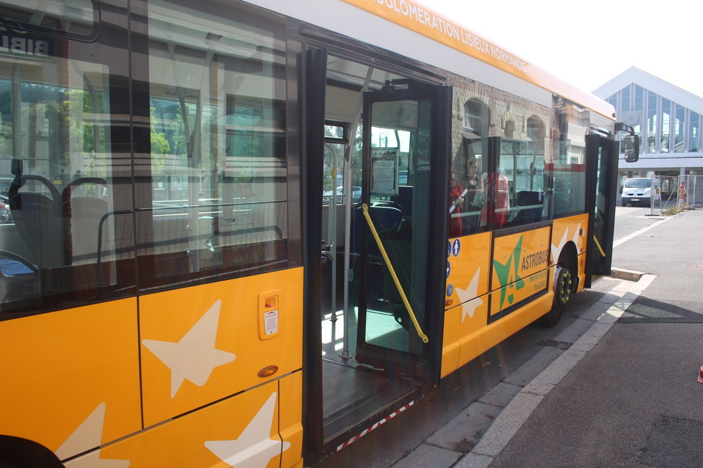
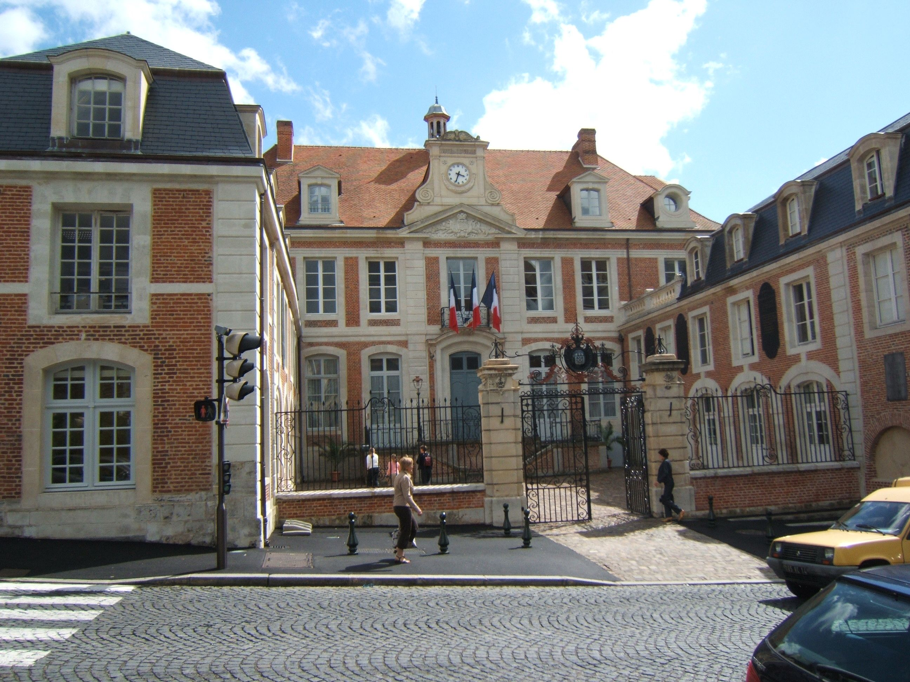
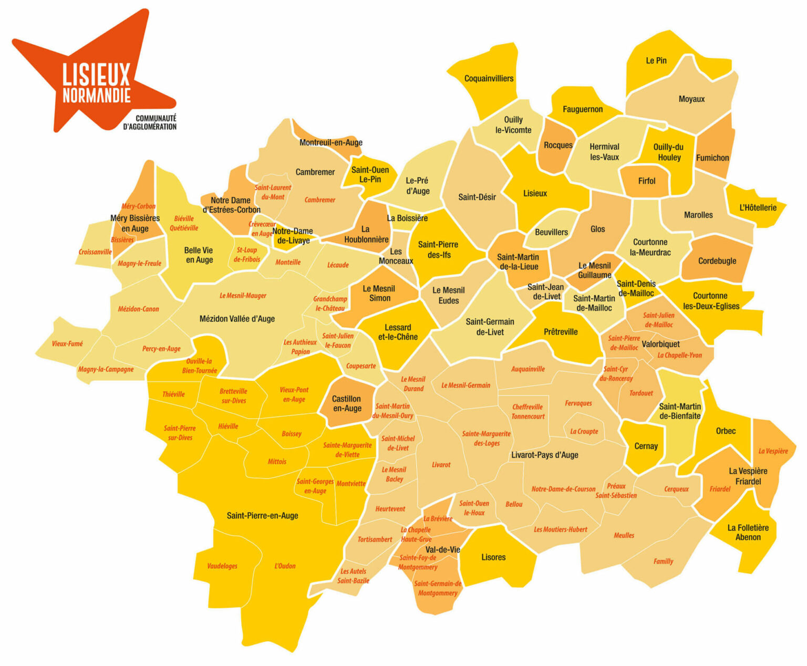

Explorez les enjeux et solutions de la transition écologique dans la Communauté de communes de
Lisieux
Bienvenue sur le site de la Communauté de communes

AstroBus
Le réseau de transports publics.

Mairie de Lisieux
Aperçu de la mairie.

Carte de la communauté de communes
Présentation de l'objectif du site
Bienvenue sur le site dédié à la transition écologique de la Communauté de Communes de Lisieux.
Ce site a été créé pour accompagner les différents acteurs - administrés, communes et entreprises
-
à communiquer pour améliorer la compréhension et la mise en œuvre de la transition écologique.
Face aux enjeux climatiques actuels, qui menacent notre planète , la transition écologique n'est plus une option mais une nécessité.
Notre objectif est de recueillir vos besoins et vos attentes, notamment en matière de mobilité durable,
afin d'adapter nos infrastructures et services de transports en commun à vos usages réels.
Ensemble, construisons un territoire plus respectueux de l'environnement et plus adapté aux besoins de
chacun.
Participez à notre étude et contribuez à façonner l'avenir de notre territoire
La Communauté de communes réunit plusieurs communes voisines qui ont choisi de collaborer afin de gérer collectivement des compétences essentielles pour le territoire. Cette organisation permet de mutualiser les moyens humains, techniques et financiers pour assurer un développement équilibré entre les différentes communes. Elle intervient notamment dans l’aménagement du territoire, la planification urbaine, la gestion des zones d’activités, la collecte et le traitement des déchets, l’assainissement ou encore la préservation de l’environnement. En agissant à une échelle plus large que celle d’une seule commune, la Communauté de communes peut porter des projets cohérents, durables et adaptés aux besoins réels du territoire.
Au-delà de la gestion quotidienne, la Communauté de communes joue également un rôle stratégique. Elle élabore des orientations de long terme pour le développement local : amélioration des infrastructures, création de services accessibles à tous, soutien à l’activité économique, et adaptation aux enjeux écologiques actuels. Cette approche partagée permet de garantir un cadre de vie homogène et de réduire les inégalités entre les communes, qu’elles soient petites ou plus peuplées. Le travail mené vise à construire un territoire attractif, pratique à vivre et résilient face aux défis économiques, sociaux et environnementaux.
Ce site a pour objectif de présenter les différents volets de l'étude que nous réalisons : analyse des besoins en mobilité, recensement des infrastructures vertes, observation du cadre de vie, et compréhension des attentes des habitants. Ces informations permettront d’alimenter un projet de territoire commun, basé sur des données concrètes et des retours d’usage. L’objectif est d’offrir à chaque habitant une vision claire du fonctionnement de la Communauté de communes, mais aussi de l’impliquer dans les démarches de transition, d’aménagement et d’amélioration du quotidien. Ensemble, nous contribuons à façonner un territoire cohérent, durable et tourné vers l’avenir.
Les différentes ressources du site
Comprendre la crise Écologique
Consultez le plan de développement local face aux enjeux économiques et
environnementaux de la communauté de communes.